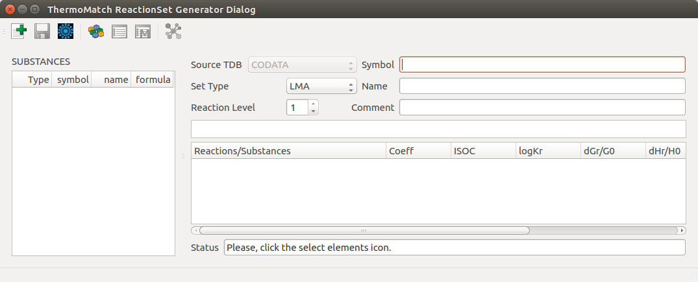
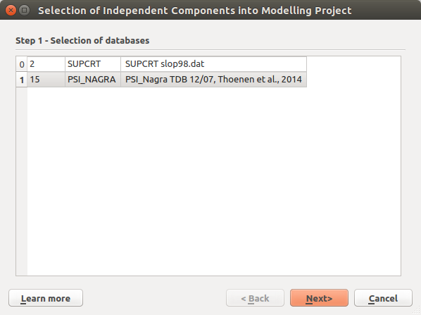
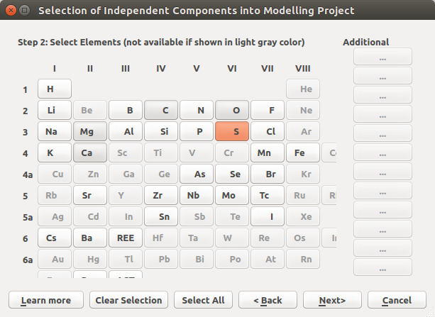
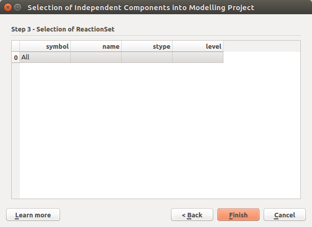
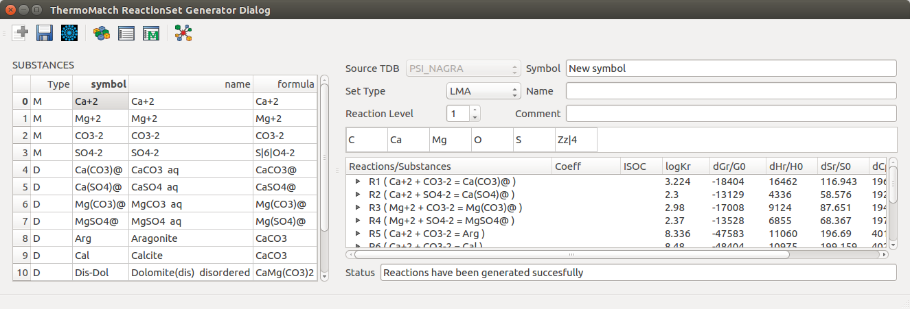
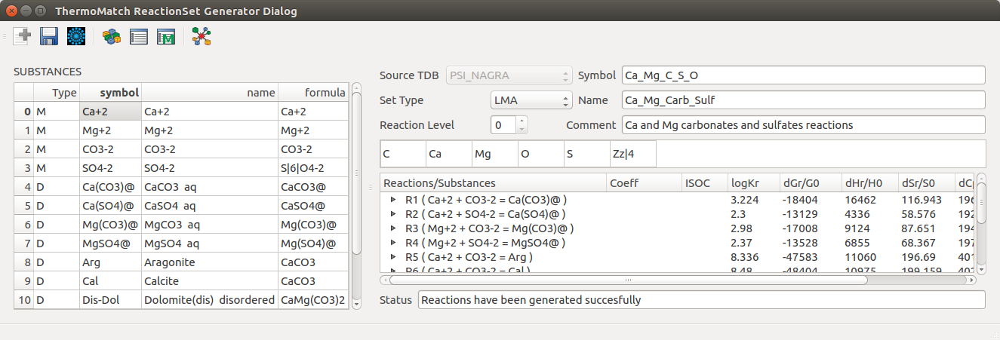
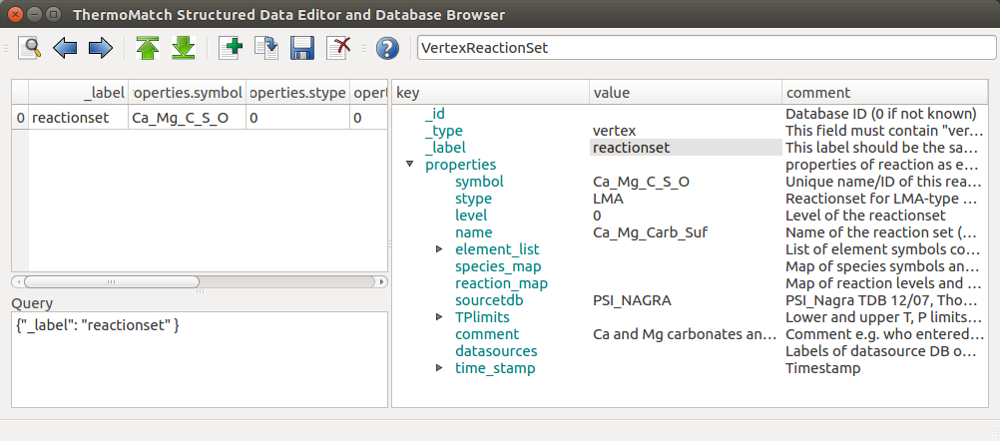

. Clear all to deselect all. Highlighted means selected. After selecting, the SUBSTANCES list on the left should contain only the selected substances.
. Clear all to deselect all. Highlighted means selected. After selecting, the SUBSTANCES list on the left should contain only the selected substances.Given a list of substances and selected master substances, the reactions generator will generate a set of independent reactions. One reaction for each reaction dependent substance.
 Empty Reactions Generator Window
Note
Follow the messages written in the status bar for the work flow, success, and error messages.
1. To start using the Reactions Generator Application first click the Select Database source and Elements . Chose the desired source database (Step 1), in the next step the desired elements (Step 2), and in the last step if present the desired reaction sets (Step 3). This will filter the data available for generating reactions.
Note
The available elements are based on the available substances in the selected source database. If a substance contains an element, the element will be selectable.
|  |  |  |
|---|---|---|
| Step 1 | Step 2 | Step 3 |
2. Select the substances to use for generating reactions (default - all substances are selected) by clicking the Select Substances . Clear all to deselect all. Highlighted means selected. After selecting, the SUBSTANCES list on the left should contain only the selected substances.

Select Substances
3. Select the master substances by clicking the Select Master Substances  . After clicking OK, the “Type” in the SUBSTANCES list on the left side, should be set to “M” for the master substances, and to “D” for the reaction dependent substances.
. After clicking OK, the “Type” in the SUBSTANCES list on the left side, should be set to “M” for the master substances, and to “D” for the reaction dependent substances.
Note
The number of master substances is given by the rank (R) of the elements stoichiometry matrix which results from the selected substances. The reactions generator algorithm will always try to have as master species the first R substances in the list.If the user selects more master substances than possible, the algorithm will eliminate master species from the bottom of the selected list.
If a selected master substance can not be set as master it will be automatically switched with a different substance during the process of generating reactions.

Select Master Substances
4. Generate reactions by clicking Generate Reactions  . If the reactions are generated succesfuly they are displayed in the window, together with their calculated properties for 1 bar and 25 C.
. If the reactions are generated succesfuly they are displayed in the window, together with their calculated properties for 1 bar and 25 C.

Reactions were generated successfully
5. Save the generated reactions in a Reactions Set (with Symbol, Name, Comment, Set Type, and Reaction Level) by clicking Save Reactions Set  . Before saving set the desired Reactions Set Symbol, Name, Comment, Set Type, and Reaction Level. If the reactions are saved successfully they should be visible when browsing the reaction data inside the database.
. Before saving set the desired Reactions Set Symbol, Name, Comment, Set Type, and Reaction Level. If the reactions are saved successfully they should be visible when browsing the reaction data inside the database.
Note
When saving the generated reactions, the symbol of the saved reactions is set the same as the symbol of the reaction defined substance. For example: Ca+2 + CO3-2 = CaCO3@ will have the symbol CaCO3@.When saving the reactions, if a reaction with the same symbol is already exists in the database the symbol of the saved reaction will be the symbol of the defined substance underscore _ and the level number. For example: CaCO3@_1.
When saving the reactions, if a reaction dependent substance is already dependent on one or many reactions (already in the database). The level of the reaction to be saved is calculated as the maximum existing level for this substance plus 1. For example: the substance with the symbol CaCO3@ has already 3 reactions which is dependent on stored in the database with levels 0, 1, 2. The symbol for the new reaction will be CaCO3@_3 and the level will be 3.

All set for saving the generated reactions

A data entry in the database for a saved Reactions set
Entries in the database for saved generated reactions
 New/Reset: Resets the Reactions Generator window.
New/Reset: Resets the Reactions Generator window. Load Reactions: Load reactions from the database which will be decomposed in a list of substances which participate in these reactions. The resulted list of substances can be further used to generate reactions. Save Reaction Set: Save generated reactions in the database as a Reactions Set. Set the Reaction Set Symbol, Name, Comment, Set Type, and Reaction Level in the respective fields. Select Substances: Select the list of substances to be used for generating reactions. Select Master Substances: Select the list of desired master substances which will be used for generating reaction.
Load Reactions: Load reactions from the database which will be decomposed in a list of substances which participate in these reactions. The resulted list of substances can be further used to generate reactions. Save Reaction Set: Save generated reactions in the database as a Reactions Set. Set the Reaction Set Symbol, Name, Comment, Set Type, and Reaction Level in the respective fields. Select Substances: Select the list of substances to be used for generating reactions. Select Master Substances: Select the list of desired master substances which will be used for generating reaction.